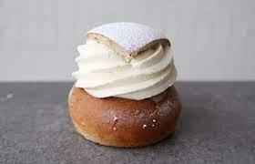

Semlor

Home
Want to try some of the best cookies?
A wonderful cookie that is found in many tradional Swedish bakeries. Tastes amazing,
and is not that difficult to make.
Ingredients:
For the dough
- 7 tablespoons unsalted butter
- 1 cup milk
- 2 teaspoons active dry yeast
- 2 eggs
- 1/4 cup natural cane sugar
- 2 teaspoons cardamom seeds, crushed
- 1/2 teaspoon salt
- 3 to 3 1/2 cups white whole flour
For the filling
- 1 1/2 cups blanched almonds
- 3 tablespoons natural cane sugar
- zest of 1 Meyer lemon
- 1/2 to 1 cups milk
- 1/2 to 1 cups heavy whipping cream
- confectioners sugar for decoration
Cooking Instructions
- In a saucepan, melt the butter; then stir in the milk. Heat until warm to the touch. In a small bowl,
dissolve the yeast in 2 to 3 tablespoons of the warm mixture. Stir and let sit until the bubbles form
on top of the yeast, or about 10 minutes.
- In a large bowl, whisk together 1 of the eggs, the sugar, cardamom, and salt. Pour in the remaining
butter and milk mixture, along with the yeast, and stir until well blended. Mix in the flour, a
1/2 cup at a time, until you can work the dough together into a ball. Work the dough together well.
- Transfer the dough to a flat surface and knead it until smooth and elastic, or about 3 to 5 minutes.
The dough should feel a little wet, but if it is sticky, add a little flour. Go lightly on the flour,
if you add too much, the buns will be dry. The dough is fully kneaded when you slice into it with a
sharp knife and see small air bubbles throughout. Return the dough to the bowl, cover with a clean tea
towel, and place it in a spot where it can rise for about an hour.
- Grease a baking sheet and divide the dough into 12 equal parts and roll into balls. Place on the baking
sheet with about 2 inches between each bun. Cover and let rise for 30 to 45 minutes.
- Preheat the over to 400F.
- Whisk the remaining egg and brush on top of the dough balls. Bake for 10 to 15 minutes, until the tops are
golden brown. Remove from the oven, transfer the buns to the counter, and cover with a tea towel to let cool.
- To prepare the filling, mix the almonds, sugar, and lemon zest in a food processor until the almonds are
finely ground and the mixture starts to stick together.
- Cut a circular lid off the top of each bun and set aside. Then cut a circle on the inside of each bun,
leaving about 1/4 inch for a border and being careful not to cut all the way through to the bottom. Scoop
out the cut portions with a spoon and place in a large bowl. Stir in the almond mixture until well blended.
Then pour in enough of the milk to make a filling that's thick and smooth.
- Fill the buns with the filling and top with the whipped cream. Place the lid on top of the whipped cream
and dust with confectioners sugar. Serve immediately.